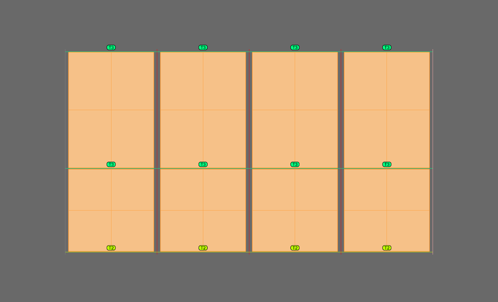

ShMD
Finds only the bays that take a sheet panel in a wireframe unit and creates a panel face (Sheet_XX) in each of them.
Glass bays are skipped, so you can select the whole unit and still get faces only where sheets belong.
Use it to prepare the front faces before running Sht. Bays are found the same way as GMD finds glass bays; the difference is that faces are created only in sheet bays.
S_Center1 line drawn in each section, on registered sections (SSP), and on a wireframe with direction data (WVector).For how to draw the line and which shapes can be made, see Making Sheet Section.
| Item | Description |
|---|---|
S_Center1 line in the section | In every section (mullion or transom) that holds a sheet, draw a line on the S_Center1 layer and add it to the section group. The rule is the same as the G_Center1 line for glass.Line position = edge of the sheet (outer face of the fold), start point = front face of the sheet, line length = fold depth. |
| Sections with a sheet on both sides | For a middle mullion with sheets on both sides, draw two lines, one for each bay. Do the same for a transom with sheets above and below. |
| Section registration | After adding the lines, register the sections again with SSP. |
| Wireframe | The mullion and transom lines must be one group and WVector must have been run. |
Sheet_XX layer in every bay whose sides all have an S_Center1 line on that bay side.
| Item | Description |
|---|---|
| Condition for a sheet bay | Every section around the bay must have an S_Center1 line on that bay side. |
| Bays without the line | Treated as glass bays and skipped. The number of skipped bays is reported in the command line. |
| Bays with the line on some sides only | No face is created, and the sides without a line are reported by name (for example, bottom transom). |
| Running again | Bays that already have a Sheet_XX face are not duplicated. |
| Sloped bays | Bays with a sloped transom or mullion (trapezoid, parallelogram) are supported. |
| Using glass faces | A Glass_XX face made by GMD can be picked directly in Sht. ShMD is not needed in that case. |
| Command | Description |
|---|---|
| Sht | Sheet modeling — pick the faces made by ShMD and create folded sheets. |
| SSP | Section registration — run it after adding the S_Center1 lines. |
| GMD | Glass surface — creates the faces of glass bays the same way. |